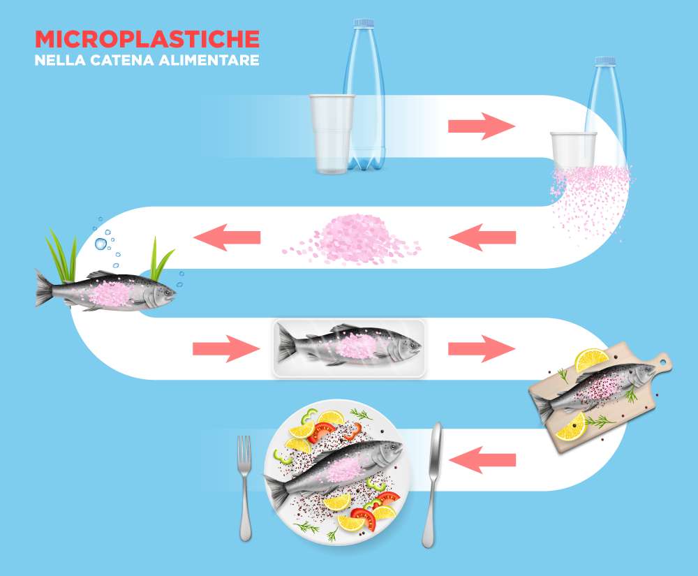
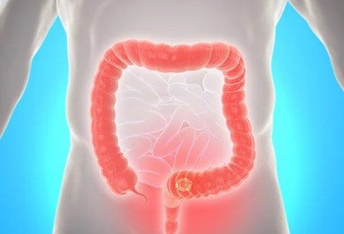

L’apparato digerente rappresenta la principale porta d’ingresso delle microplastiche nel corpo umano. L’ingestione avviene quotidianamente attraverso il consumo di acqua potabile (sia di rubinetto che in bottiglia), alimenti contaminati come pesce, molluschi, sale marino e miele, e tramite il rilascio di particelle dagli imballaggi plastici durante la conservazione o il riscaldamento dei cibi.

Una volta ingerite, le microplastiche attraversano bocca, esofago, stomaco e intestino. Il loro destino dipende in gran parte dalle dimensioni:
Uno degli aspetti più critici indagati dalla ricerca scientifica è l’effetto delle microplastiche sulla flora batterica. La loro presenza può causare disbiosi, ovvero un'alterazione dell'equilibrio del microbiota:
Le microplastiche possono causare un danno fisico diretto alle pareti dell'intestino, innescando una risposta infiammatoria locale.
L'infiammazione danneggia le giunzioni tra le cellule epiteliali, aumentando la permeabilità intestinale. Ciò permette a particelle e tossine di entrare nel flusso sanguigno, causando infiammazione sistemica.
Le microplastiche agiscono come vettori chimici e possono trasportare:

L'esposizione cronica a microplastiche è associata a: